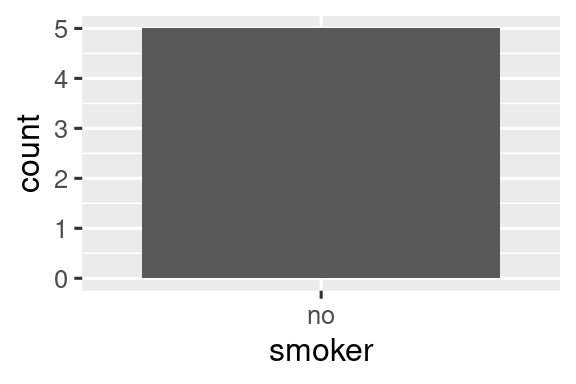
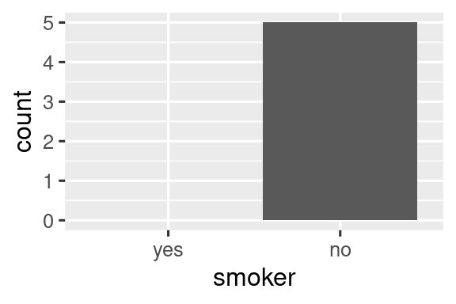

18 Κενές τιμές
18.1 Εισαγωγή
Έχετε ήδη μάθει τα βασικά για τις κενές τιμές νωρίτερα στο βιβλίο. Τις είδατε για πρώτη φορά στο Κεφάλαιο 1 όπου οδήγησαν σε μία προειδοποίηση κατά τη δημιουργία μιας γραφικής παράστασης, καθώς και στην Ενότητα 3.5.2 όπου παρενέβησαν στον υπολογισμό στατιστικών μέτρων σύνοψης και μάθατε για τη μολυσματική τους φύση και για το πώς να ελέγχετε για τυχόν παρουσία τους στην Ενότητα 12.2.2. Τώρα θα επανέλθουμε σε αυτά σε μεγαλύτερο βάθος, ώστε να μάθετε περισσότερες λεπτομέρειες.
Θα ξεκινήσουμε συζητώντας ορισμένα γενικά εργαλεία για την εργασία με τιμές που λείπουν και έχουν καταγραφεί ως NA. Στη συνέχεια, θα διερευνήσουμε την ιδέα των τιμών που λείπουν σιωπηρά, τιμές που απλώς απουσιάζουν από τα δεδομένα σας και θα δείξουμε ορισμένα εργαλεία που μπορείτε να χρησιμοποιήσετε για να τις καταστήσετε σαφείς. Θα ολοκληρώσουμε με μία σχετική συζήτηση για κενές ομάδες, που προκαλούνται από επίπεδα παραγόντων που δεν εμφανίζονται στα δεδομένα.
18.1.1 Προαπαιτούμενα
Οι συναρτήσεις με τις οποίες εργαζόμαστε με ελλιπή δεδομένα προέρχονται κυρίως από τις βιβλιοθήκες dplyr και tidyr, οι οποίες είναι βασικά μέλη του tidyverse.
18.2 Ρητά κενές τιμές
Ξεκινώντας, ας εξερευνήσουμε μερικά χρήσιμα εργαλεία για τη δημιουργία ή την εξάλειψη ρητά κενών τιμών, περιπτώσεων δηλαδή όπου σε ένα κελί βλέπετε την τιμή NA.
18.2.1 Τελευταία παρατήρηση που μεταφέρθηκε
Μία κοινή χρήση για τις κενές τιμές είναι ως διευκόλυνση κατά την εισαγωγή δεδομένων. Όταν τα δεδομένα εισάγονται χειροκίνητα, μερικές φορές οι κενές τιμές υποδεικνύουν ότι επαναλαμβάνεται (μεταφέρεται) η τιμή της προηγούμενης γραμμής:
treatment <- tribble(
~person, ~treatment, ~response,
"Derrick Whitmore", 1, 7,
NA, 2, 10,
NA, 3, NA,
"Katherine Burke", 1, 4
)Μπορείτε να συμπληρώσετε αυτές τις κενές τιμές χρησιμοποιώντας τη συνάρτηση tidyr::fill(). Δουλεύει όπως η select(), λαμβάνοντας ως είσοδο ένα σύνολο στηλών.
treatment |>
fill(everything())
#> # A tibble: 4 × 3
#> person treatment response
#> <chr> <dbl> <dbl>
#> 1 Derrick Whitmore 1 7
#> 2 Derrick Whitmore 2 10
#> 3 Derrick Whitmore 3 10
#> 4 Katherine Burke 1 4Αυτή η αντιμετώπιση μερικές φορές ονομάζεται “μεταφορά της τελευταίας παρατήρησης” (“last observation carried forward”), ή locf για συντομία. Μπορείτε να χρησιμοποιήσετε το όρισμα .direction για να συμπληρώσετε τις κενές τιμές που έχουν δημιουργηθεί με άλλους τρόπους.
18.2.2 Σταθερές τιμές
Μερικές φορές οι κενές τιμές αντιπροσωπεύουν κάποια σταθερή και γνωστή τιμή, συνηθέστερα το 0. Μπορείτε να χρησιμοποιήσετε τη συνάρτηση dplyr::coalesce() για να τις αντικαταστήσετε:
Μερικές φορές θα αντιμετωπίσετε το αντίθετο πρόβλημα, όπου κάποια συγκεκριμένη τιμή αντιπροσωπεύει στην πραγματικότητα μία κενή τιμή. Αυτό συνήθως προκύπτει σε δεδομένα που δημιουργούνται από παλαιότερο λογισμικό που δεν έχει κατάλληλο τρόπο να αναπαραστήσει τις κενές τιμές, κι επομένως πρέπει να χρησιμοποιήσει κάποια ειδική τιμή, όπως το 99 ή το -999.
Εάν είναι δυνατόν, χειριστείτε αυτές τις περιπτώσεις κατάλληλα ήδη κατά την ανάγνωση των δεδομένων, για παράδειγμα, χρησιμοποιώντας το όρισμα na στην readr::read_csv(), π.χ., read_csv(διαδρομή, na = "99"). Εάν ανακαλύψετε το πρόβλημα αργότερα ή η πηγή δεδομένων σας δεν παρέχει τρόπο να το χειριστείτε κατά την ανάγνωση, μπορείτε να χρησιμοποιήσετε την συνάρτηση dplyr::na_if():
18.2.3 NaN
Πριν συνεχίσουμε, υπάρχει ένας ειδικός τύπος κενών τιμών που θα συναντάτε κατά καιρούς: η τιμή NaN (προφέρεται “ναν”), ή not a number. Δεν είναι τόσο σημαντικό να το γνωρίζετε γιατί γενικά συμπεριφέρεται ακριβώς όπως το NA:
Για τη σπάνια περίπτωση που θα πρέπει να διακρίνεται το NA από το NaN, μπορείτε να χρησιμοποιήσετε τον έλεγχο is.nan(x).
Γενικά, θα συναντήσετε τη NaN όταν εκτελείτε μία μαθηματική πράξη της οποίας το αποτέλεσμα είναι απροσδιόριστο:
0 / 0
#> [1] NaN
0 * Inf
#> [1] NaN
Inf - Inf
#> [1] NaN
sqrt(-1)
#> Warning in sqrt(-1): NaNs produced
#> [1] NaN18.3 Έμμεσα κενές τιμές
Μέχρι στιγμής, έχουμε μιλήσει για ρητά κενές τιμές, δηλαδή περιπτώσεις όπου μπορείτε να δείτε ένα NA στα δεδομένα σας. Ωστόσο, οι κενές τιμές μπορεί να λείπουν έμμεσα, εάν μία ολόκληρη γραμμή δεδομένων απλώς λείπει από τα δεδομένα. Ας δείξουμε τη διαφορά με ένα απλό σύνολο δεδομένων που καταγράφει την τιμή ορισμένων μετοχών για κάθε τρίμηνο:
Αυτό το σύνολο δεδομένων έχει δύο παρατηρήσεις που λείπουν:
Η
priceστο τέταρτο τρίμηνο του 2020 λείπει ρητά, επειδή η τιμή της είναιNA.Η
priceγια το πρώτο τρίμηνο του 2021 λείπει έμμεσα, επειδή απλώς δεν εμφανίζεται στο σύνολο δεδομένων.
Ένας τρόπος για να σκεφτείτε τη διαφορά είναι με αυτό το κοάν που θυμίζει Ζεν (Zen-like koan):
Μία ρητά κενή τιμή είναι η παρουσία μιας απουσίας.
Μία έμμεσα κενή τιμή είναι η απουσία μιας παρουσίας.
Μερικές φορές θέλετε να κάνετε τις έμμεσα κενές τιμές ξεκάθαρες, για να έχετε κάτι απτό να εργαστείτε. Σε άλλες περιπτώσεις, η δομή των δεδομένων σας επιβάλλει ρητά κενές τιμές και θέλετε να απαλλαγείτε από αυτές. Οι ενότητες που ακολουθούν συζητούν ορισμένα εργαλεία για τη μετάβαση μεταξύ έμμεσα και ρητά κενών τιμών.
18.3.1 Περιστροφή (Pivoting)
Έχετε ήδη δει ένα εργαλείο που μπορεί να κάνει τις έμμεσα κενές τιμές ρητές και το αντίστροφο: την περιστροφή (pivoting). Η διεύρυνση των δεδομένων (wider) μπορεί να κάνει ρητές τις έμμεσα κενές τιμές, επειδή κάθε συνδυασμός γραμμών και νέων στηλών πρέπει να έχει κάποια τιμή. Για παράδειγμα, αν περιστρέψουμε το stocks για να βάλουμε το quarter στις στήλες, και οι δύο τιμές που λείπουν γίνονται ρητά κενές τιμές:
stocks |>
pivot_wider(
names_from = qtr,
values_from = price
)
#> # A tibble: 2 × 5
#> year `1` `2` `3` `4`
#> <dbl> <dbl> <dbl> <dbl> <dbl>
#> 1 2020 1.88 0.59 0.35 NA
#> 2 2021 NA 0.92 0.17 2.66Από προεπιλογή, η επιμήκυνση των δεδομένων διατηρεί τις ρητά κενές τιμές, αλλά εάν υπάρχουν δομικά κενές τιμές που υπάρχουν μόνο επειδή τα δεδομένα δεν είναι τακτοποιημένα, μπορείτε να τις απορρίψετε (να τις κάνετε έμμεσες) με το όρισμα values_drop_na = TRUE. Δείτε τα παραδείγματα στην Ενότητα 5.2 για περισσότερες λεπτομέρειες.
18.3.2 Πλήρη (Complete) δεδομένα
Η συνάρτηση tidyr::complete() σας επιτρέπει να δημιουργήσετε ρητά κενές τιμές παρέχοντας ένα σύνολο μεταβλητών που ορίζουν τον συνδυασμό των γραμμών που θα πρέπει να υπάρχουν. Για παράδειγμα, γνωρίζουμε ότι όλοι οι συνδυασμοί των year και qtr θα πρέπει να υπάρχουν στα δεδομένα του stocks:
stocks |>
complete(year, qtr)
#> # A tibble: 8 × 3
#> year qtr price
#> <dbl> <dbl> <dbl>
#> 1 2020 1 1.88
#> 2 2020 2 0.59
#> 3 2020 3 0.35
#> 4 2020 4 NA
#> 5 2021 1 NA
#> 6 2021 2 0.92
#> # ℹ 2 more rowsΣυνήθως, θα καλέσετε την complete() χρησιμοποιώντας τα ονόματα μεταβλητών που υπάρχουν στα δεδομένα σας, συμπληρώνοντας τους συνδυασμούς που λείπουν. Ωστόσο, μερικές φορές οι μεμονωμένες μεταβλητές είναι οι ίδιες ημιτελείς, επομένως μπορείτε να παρέχετε τα δικά σας δεδομένα. Για παράδειγμα, μπορεί να γνωρίζετε ότι το σύνολο δεδομένων stocks υποτίθεται ότι καλύπτει το διάστημα από το 2019 έως το 2021, επομένως θα μπορούσατε να παρέχετε ρητά αυτές τις τιμές για τη μεταβλητή year:
stocks |>
complete(year = 2019:2021, qtr)
#> # A tibble: 12 × 3
#> year qtr price
#> <dbl> <dbl> <dbl>
#> 1 2019 1 NA
#> 2 2019 2 NA
#> 3 2019 3 NA
#> 4 2019 4 NA
#> 5 2020 1 1.88
#> 6 2020 2 0.59
#> # ℹ 6 more rowsΕάν το εύρος μιας μεταβλητής είναι σωστό, αλλά δεν υπάρχουν όλες οι τιμές, θα μπορούσατε να χρησιμοποιήσετε τη συνάρτηση full_seq(x, 1) για να δημιουργήσετε όλες τις τιμές από min(x) έως max(x), με απόσταση 1 τιμής κάθε φορά.
Σε ορισμένες περιπτώσεις, το πλήρες σύνολο των παρατηρήσεων δεν μπορεί να δημιουργηθεί με έναν απλό συνδυασμό μεταβλητών. Σε αυτήν την περίπτωση, μπορείτε να κάνετε με μη αυτόματο τρόπο ό,τι κάνει η complete() για εσάς: δημιουργήστε ένα πλαίσιο δεδομένων που περιέχει όλες τις γραμμές που θα πρέπει να υπάρχουν (χρησιμοποιώντας οποιονδήποτε συνδυασμό τεχνικών χρειάζεστε), στη συνέχεια συνδυάστε το με το αρχικό σας σύνολο δεδομένων με την dplyr ::full_join().
18.3.3 Ενώσεις
Αυτό μας φέρνει σε έναν άλλο σημαντικό τρόπο εντοπισμού έμμεσα κενών τιμών: τις ενώσεις. Θα μάθετε περισσότερα για τις ενώσεις στο Κεφάλαιο 19, αλλά θέλαμε να σας τις αναφέρουμε γρήγορα εδώ, καθώς συχνά μπορεί να παρατηρήσετε ότι λείπουν τιμές από ένα σύνολο δεδομένων μόνο όταν το συγκρίνετε με ένα άλλο.
Η dplyr::anti_join(x, y) είναι ένα ιδιαίτερα χρήσιμο εργαλείο σε αυτή την περίπτωση επειδή επιλέγει μόνο τις γραμμές του x που δεν έχουν αντιστοιχία στο y. Για παράδειγμα, μπορούμε να χρησιμοποιήσουμε δύο anti_join() για να αποκαλύψουμε ότι μας λείπουν πληροφορίες για τέσσερα αεροδρόμια και 722 αεροπλάνα που αναφέρονται στο flights:
library(nycflights13)
flights |>
distinct(faa = dest) |>
anti_join(airports)
#> Joining with `by = join_by(faa)`
#> # A tibble: 4 × 1
#> faa
#> <chr>
#> 1 BQN
#> 2 SJU
#> 3 STT
#> 4 PSE
flights |>
distinct(tailnum) |>
anti_join(planes)
#> Joining with `by = join_by(tailnum)`
#> # A tibble: 722 × 1
#> tailnum
#> <chr>
#> 1 N3ALAA
#> 2 N3DUAA
#> 3 N542MQ
#> 4 N730MQ
#> 5 N9EAMQ
#> 6 N532UA
#> # ℹ 716 more rows18.3.4 Ασκήσεις
- Μπορείτε να βρείτε κάποια σχέση μεταξύ του αερομεταφορέα και των γραμμών που φαίνεται να λείπουν από τα
planes;
18.4 Παράγοντες και κενές ομάδες
Ένας τελευταίος τύπος ελλιπούς πληροφορίας είναι η κενή ομάδα, μία ομάδα που δεν περιέχει παρατηρήσεις, η οποία μπορεί να προκύψει όταν εργάζεστε με παράγοντες. Για παράδειγμα, φανταστείτε ότι έχουμε ένα σύνολο δεδομένων που περιέχει πληροφορίες σχετικά με την υγεία διαφόρων ατόμων:
Εμείς θέλουμε να υπολογίσουμε το πλήθος των καπνιστών με την dplyr::count():
health |> count(smoker)
#> # A tibble: 1 × 2
#> smoker n
#> <fct> <int>
#> 1 no 5Αυτό το σύνολο δεδομένων περιέχει μόνο μη καπνιστές, αλλά γνωρίζουμε ότι υπάρχουν καπνιστές - η ομάδα των καπνιστών είναι άδεια. Μπορούμε να ζητήσουμε από την count() να διατηρήσει όλες τις ομάδες, ακόμη και αυτές που δεν φαίνονται στα δεδομένα χρησιμοποιώντας το .drop = FALSE:
health |> count(smoker, .drop = FALSE)
#> # A tibble: 2 × 2
#> smoker n
#> <fct> <int>
#> 1 yes 0
#> 2 no 5Η ίδια αρχή ισχύει για τους διακριτούς άξονες στο πακέτο ggplot2, οι οποίοι επίσης απορρίπτουν επίπεδα που δεν έχουν τιμές. Εναλλακτικά, μπορείτε να τους αναγκάσετε να τα εμφανιστούν παρέχοντας το όρισμα drop = FALSE στον κατάλληλο διακριτό άξονα:
ggplot(health, aes(x = smoker)) +
geom_bar() +
scale_x_discrete()
ggplot(health, aes(x = smoker)) +
geom_bar() +
scale_x_discrete(drop = FALSE)

Γενικά, το ίδιο πρόβλημα προκύπτει πιο συχνά με την dplyr::group_by(). Και πάλι μπορείτε να χρησιμοποιήσετε το .drop = FALSE για να διατηρήσει όλα τα επίπεδα των παραγόντων:
health |>
group_by(smoker, .drop = FALSE) |>
summarize(
n = n(),
mean_age = mean(age),
min_age = min(age),
max_age = max(age),
sd_age = sd(age)
)
#> # A tibble: 2 × 6
#> smoker n mean_age min_age max_age sd_age
#> <fct> <int> <dbl> <dbl> <dbl> <dbl>
#> 1 yes 0 NaN Inf -Inf NA
#> 2 no 5 60 34 88 21.6Εδώ προκύπτουν μερικά ενδιαφέροντα αποτελέσματα επειδή όταν συνοψίζουμε μία κενή ομάδα, οι συναρτήσεις σύνοψης εφαρμόζονται σε διανύσματα μηδενικού μήκους. Υπάρχει μία σημαντική διάκριση μεταξύ των κενών διανυσμάτων, που έχουν μήκος 0, και των κενών τιμών, καθένα από τα οποία έχει μήκος 1.
Όλες οι συναρτήσεις σύνοψης λειτουργούν με διανύσματα μηδενικού μήκους, αλλά μπορεί να επιστρέφουν αποτελέσματα που εκπλήσσουν με την πρώτη ματιά. Εδώ βλέπουμε ότι το mean(age) επιστρέφει NaN επειδή το mean(age) = sum(age)/length(age) που εδώ είναι 0/0. Τα max() και min() επιστρέφουν -Inf και Inf για κενά διανύσματα, οπότε αν συνδυάσετε τα αποτελέσματα με ένα μη κενό διάνυσμα νέων δεδομένων και υπολογίσετε εκ νέου, θα λάβετε το ελάχιστο ή το μέγιστο των νέων δεδομένων1.
Μερικές φορές μία απλούστερη προσέγγιση είναι να εκτελέσετε τη σύνοψη και στη συνέχεια να κάνετε τις έμμεσα κενές τιμές ρητές με την complete().
health |>
group_by(smoker) |>
summarize(
n = n(),
mean_age = mean(age),
min_age = min(age),
max_age = max(age),
sd_age = sd(age)
) |>
complete(smoker)
#> # A tibble: 2 × 6
#> smoker n mean_age min_age max_age sd_age
#> <fct> <int> <dbl> <dbl> <dbl> <dbl>
#> 1 yes NA NA NA NA NA
#> 2 no 5 60 34 88 21.6Το κύριο μειονέκτημα αυτής της προσέγγισης είναι ότι λαμβάνετε ένα NA στην καταμέτρηση, παρόλο που γνωρίζετε ότι θα πρέπει να είναι μηδέν.
18.5 Σύνοψη
Οι κενές τιμές είναι περίεργες! Μερικές φορές καταγράφονται ρητά ως NA, ενώ άλλες φορές τις παρατηρείτε μόνο από την απουσία τους. Αυτό το κεφάλαιο σας έδωσε μερικά εργαλεία για την εργασία με ρητές κενές τιμές, εργαλεία για την αποκάλυψη έμμεσα κενών τιμών και συζητήσαμε μερικούς από τους τρόπους με τους οποίους οι έμμεσα κενές τιμές μπορούν να γίνουν ρητές και το αντίστροφο.
Στο επόμενο κεφάλαιο, ασχολούμαστε με το τελευταίο κεφάλαιο σε αυτό το μέρος του βιβλίου: τις ενώσεις. Αυτή είναι μία μικρή αλλαγή σε σχέση με τα μέχρι τώρα κεφάλαια, επειδή πρόκειται να συζητήσουμε εργαλεία που λειτουργούν με πλαίσια δεδομένων στο σύνολό τους, όχι κάτι που βάζετε μέσα σε ένα πλαίσιο δεδομένων.
Με άλλα λόγια, το
min(c(x, y))είναι πάντα ίσο μεmin(min(x), min(y)).↩︎